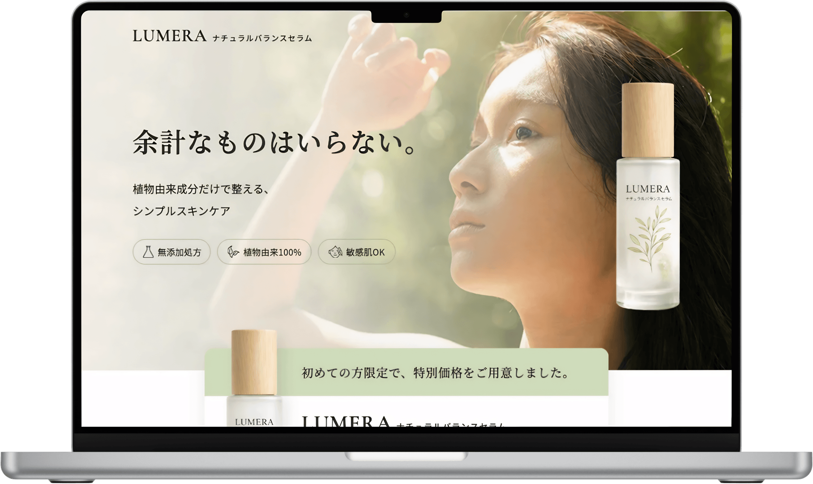
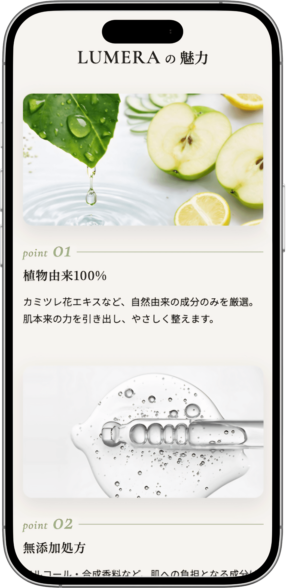
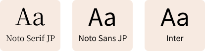
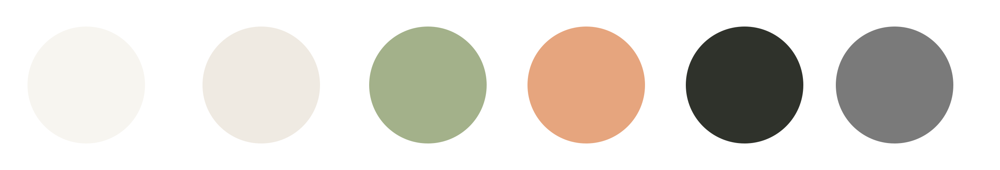

美容液LP（架空）
Natural skincare landing page

概要
敏感肌に悩む女性をターゲットにした、ナチュラルスキンケア商品の架空LPを制作しました。
「余計なものはいらない。」というコンセプトを軸に、植物由来成分や無添加処方の魅力が伝わるよう設計しています。
やさしさや安心感を感じられるビジュアルと、購入までの導線を意識した構成で、商品の価値を自然に伝えられるLPを目指しました。
工夫したポイント
やさしさと安心感が伝わるデザイン
ベージュやグリーンを基調に、自然光を活かした写真を使用することで、ナチュラルでやさしい世界観を表現しました。
また、余白を十分に確保し、情報量が多くなりすぎないよう整理することで、商品の魅力が伝わりやすいデザインを意識しています。
商品の特徴が伝わる構成設計
敏感肌の悩みへの共感から始まり、肌トラブルの原因、商品の特徴、成分紹介へと段階的に情報を展開しています。
ユーザーの疑問や不安を解消しながら読み進められる構成とすることで、商品への理解を深められるよう設計しました。
購入につながる導線設計
ファーストビューとページ下部にCTAを配置し、購入を検討したタイミングですぐに行動へ移れるようにしています。
また、成分紹介や利用者の声を掲載することで信頼感を高め、購入への心理的ハードルを下げる工夫を行いました。

制作を通して
商品の魅力を伝えるだけでなく、ユーザーが安心して購入を検討できる情報設計を意識して制作しました。
「余計なものはいらない。」というコンセプトを軸に、自然由来成分や無添加処方といった商品の特徴が伝わるよう、デザインと構成の両面から設計しています。配色や写真選びではやさしさや安心感を表現し、余白を活かすことで落ち着いた印象に仕上げました。
また、悩みへの共感から商品の特徴、成分紹介へと段階的に情報を展開することで、自然に理解を深められる構成を意識しています。
この制作を通して、見た目の美しさだけでなく、情報の伝え方や導線設計の重要性を改めて実感しました。今後もデザインと実装の両面から、運用しやすく成果につながるWebサイト制作を心がけていきたいと考えています。
デザインシステム
Typography

Color palette
